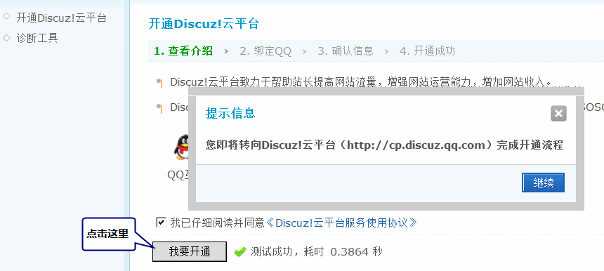
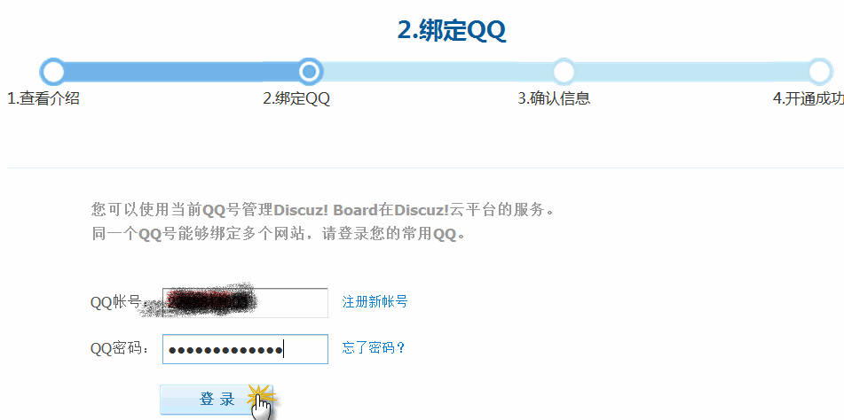
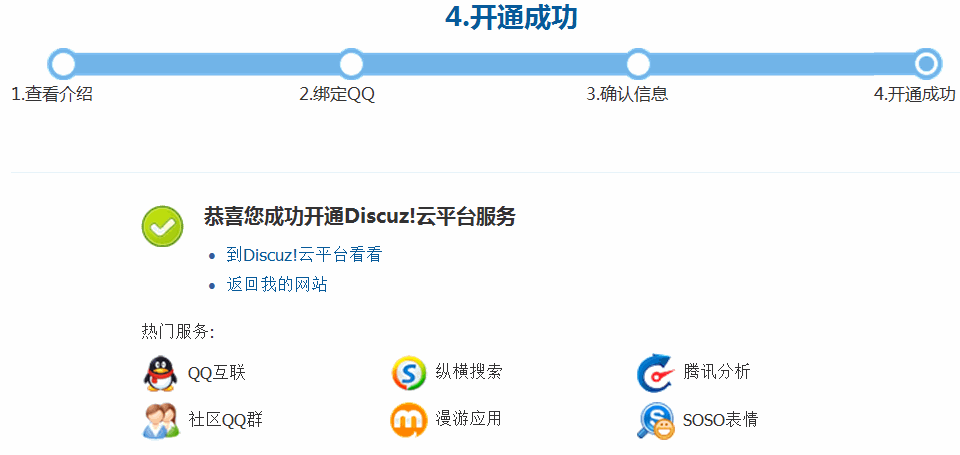

开通Discuz!云平台
平台简介 Discuz!云平台致力于帮助站长发展社区网站，为站长带来更多收益。使用云平台各项服务，站长可以节省服务器资源、降低运营成本，获取更多流量，改善网站用户体验、提升用户黏性和活跃度。Discuz!云平台将不断地提供更多高质量的服务，帮助站长成长！
一、如何开通 Discuz!云平台
具体步骤如下：
1、使用网点创始人帐号登录后台，进入“云平台”页面，点击“我要开通”。开通过程是在Discuz!云平台页面进行，点击“继续”跳转到Discuz!云平台。
2、请使用常用QQ号登录Discuz!云平台，登录后该帐号将与贵站绑定。同一个QQ号能够绑定多个网站。
3、请确认“站点名称”、“站点地址”、“绑定QQ号”，若信息正确，点击“确认”。如需修改某一项，参考修改方法。
http://cp.discuz.qq.com/faq?fId=1303443826
4、恭喜您，贵站已成功开通Discuz!云平台
可以选择到Discuz!云平台看看，或者返回到您的网站。
1、点击“Discuz!云平台看看”，登录QQ帐号后，进入Discuz!云平台首页
2、点击“返回我的网站”，将进入Discuz!后台的“云平台”页面
相关阅读：`Discuz! X2 / Discuz!X1.5.1 如何开通 Discuz!云平台 <http://cp.discuz.qq.com/faq?fId=1303391610>`_.